「ことばみまもり｜SNS投稿前の炎上防止・文章リスク確認サービス」 は、SNSへ投稿したい文章について、
表現の強さや伝わり方の傾向を確認しながら、
投稿前にひと呼吸おくための参考情報を表示するツールです。
はじめてご利用される方にも安心してお使いいただけるよう、
このページでは基本的な使い方と、活用しやすい場面をご案内します。
どんな時に使うとよいか
「ことばみまもり」は、言葉や思想を制限したり、文章の正誤を決めるためのものではなく、 投稿前に表現を少し見直したい時、補助としてご利用いただくツールです。
- SNSへ投稿する前に、言い方がきつく見えないか少し気になる時
- 気持ちが高ぶっている時に、いったん落ち着いて文章を見直したい時
- 相手に誤解なく伝わる表現になっているか確認したい時
- 下書きした文章を、もう少しやわらかい表現に整えたい時
- 投稿する場面に合わせて、標準・やわらかめ・ビジネス向けの観点で確認したい時
- 文章を考えているが、内容のアドバイスをもらいたい時
- 文章確認でAIを使用しているが、普段お使いのAIが、システム障害などで使用できない場合でも、文章を確認したい時
「ことばみまもり」へアクセスすると、以下のページが表示されます。
「ことばみまもり」 へアクセスすると、以下のページが表示されます。
画面右上で、画面のライトモード、ダークモードを選択いただけます。
初期状態では、ライトモードですが、夜に画面を見る時など、文字や背景色が明るくて見ずらい場合、
ライトモードからダークモードへ切り替えいただけます。
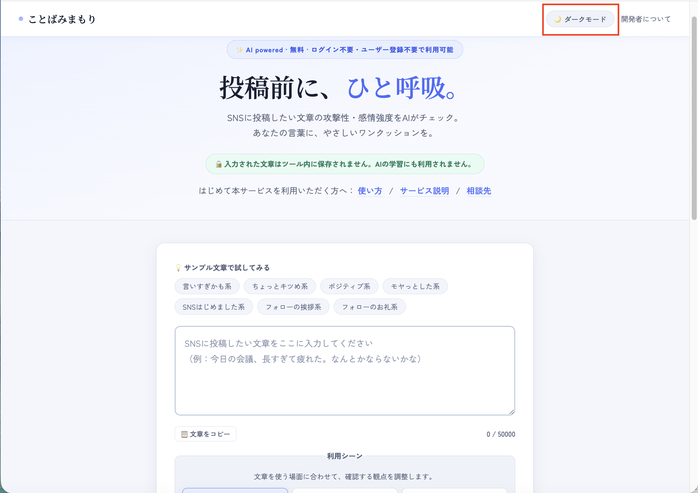
画面右上の「ダークモード」をクリックします。
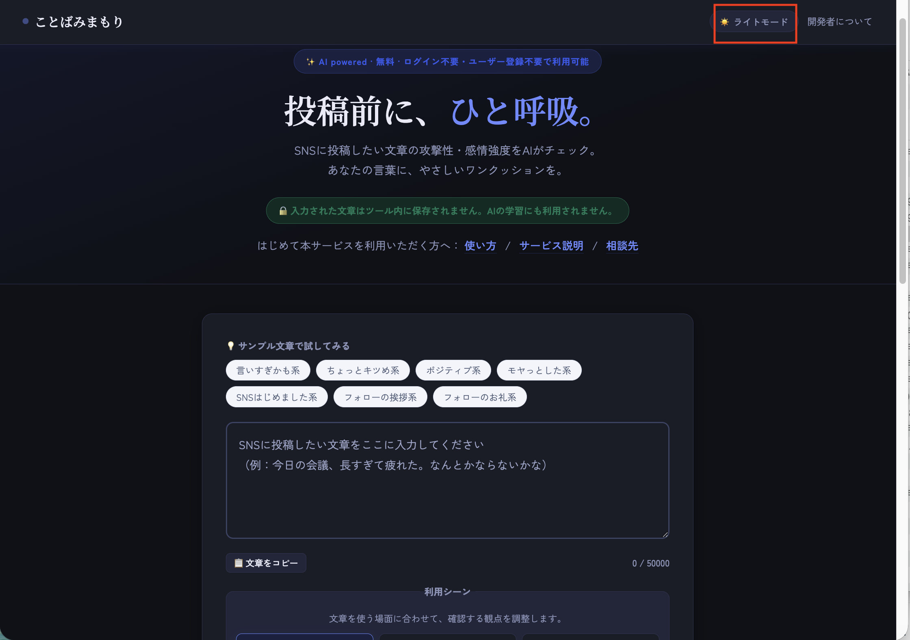
画面右上の「ライトモード」をクリックします。
- ライトモード、ダークモードはいつでも好きなタイミングで、切り替え可能です。
確認したい文章を入力します
トップページの入力欄に、SNSへ投稿したい文章を入力します。
投稿前に「この言い方で伝わりやすいかな」「少し強すぎないかな」と感じた文章を、
そのまま入力して確認できます。
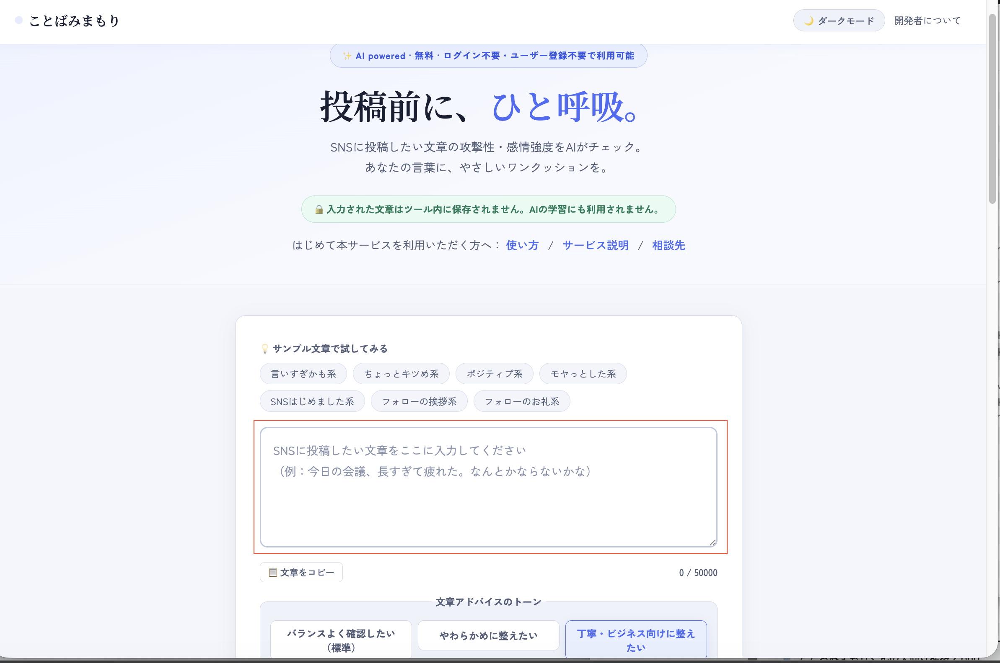
入力欄に、確認したい文章を入力します。
- 短い文章でも確認できます。
- 投稿前の下書きや、送信前の文面チェックにもご利用いただけます。
- 入力した文章はツール内に保存されません。
- 入力欄の右上にある 「📋 コピー」ボタンをクリックすると、入力中の文章をクリップボードにコピーできます。確認・修正した文章をSNSへ貼り付ける際にご利用ください。
文章アドバイスのトーンを選び、「確認してみる」ボタンをクリックします
文章を入力したあと、必要に応じて
文章アドバイスのトーン
を選択します。
迷った場合は、初期状態の
「バランスよく確認したい（標準）」
のままで大丈夫です。
トーンを選んだら、画面下の
「確認してみる」
ボタンをクリックしてください。
入力した文章をもとに、AIが参考情報を表示します。
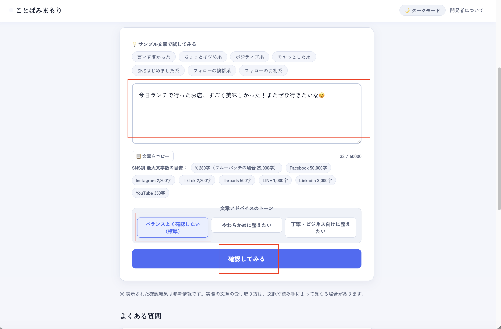
文章入力後、「確認してみる」ボタンをクリックします。
- 文章が未入力の場合は、先に文章を入力してください。
- 確認結果が表示されるまで、少し時間がかかる場合があります。
- 入力した文章について、SNS投稿用にコピーしたい場合、「文章をコピー」ボタンをクリックして、文章をコピーできます。
- 「バランスよく確認したい（標準）」は、読み手への伝わり方を全体的に確認したい時におすすめです。
- 「やわらかめに整えたい」は、フランクでやさしい印象に近づけたい時におすすめです。
- 「丁寧・ビジネス向けに整えたい」は、仕事やフォーマルな場面で失礼の少ない表現にしたい時におすすめです。
- 選んだトーンは、改善のヒントや言い換えの方向性に反映されます。AIが投稿文の完成版を自動生成するものではありません。
確認結果を参考に、必要に応じて表現を整えます。
確認結果では、文章全体の傾向に加えて、
気になりそうな点 や
改善のヒント
が表示されます。
文章の確認後、投稿前に見直せる行動のヒントとして
次にできること
も表示されます。
その下には、投稿・送信前に必要に応じて確認できる
投稿前セルフチェック
も表示されます。
必要に応じて文章を見直し、より伝わりやすく、やわらかい表現に整えてみてください。
STEP 2で選んだ文章アドバイスのトーンに応じて、改善のヒントの雰囲気が少し変わります。
ただし、表示される内容はあくまで見直しの参考情報です。投稿するかどうかの最終判断は、ご利用者さまご自身で行ってください。
2回目以降のチェックでは、前回との比較結果が
リスク変化バナーとして表示されます。
リスクが改善された場合は緑色で「リスクが改善されました！」、
上がった場合は赤色で「リスクが上がりました」と表示されるため、
修正の効果をひと目で確認できます。
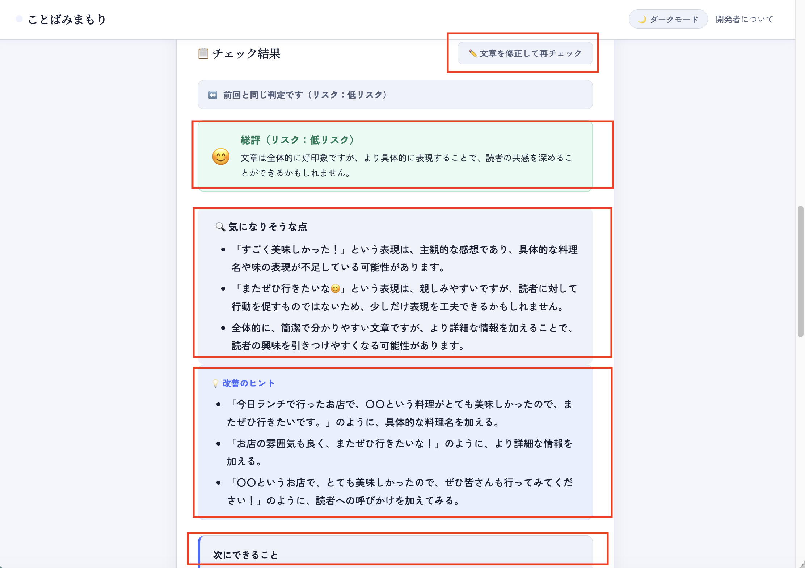
文章の確認結果として、リスク・気になりそうな点・改善のヒント・次にできることが表示されます。
確認結果を踏まえて文章を修正する場合、「文章を修正して再チェック」をクリックします。
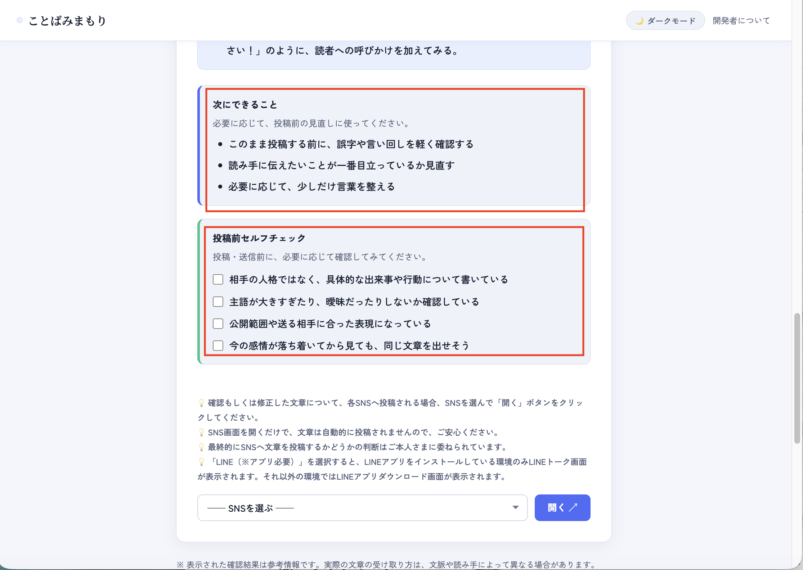
文章の確認結果として、投稿前セルフチェックも表示されます。
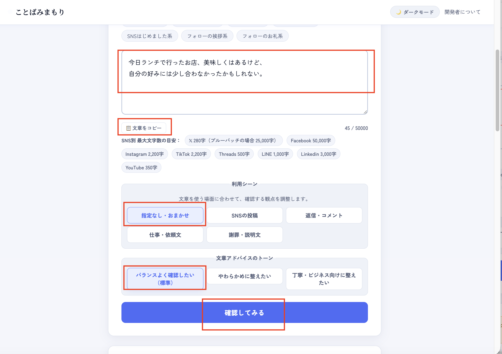
前回の文章確認結果を踏まえて、文章を修正する場合、修正した文章を入力します。
「確認してみる」ボタンをクリックします。
修正した文章をコピーしたい場合、「文章をコピー」ボタンをクリックします。
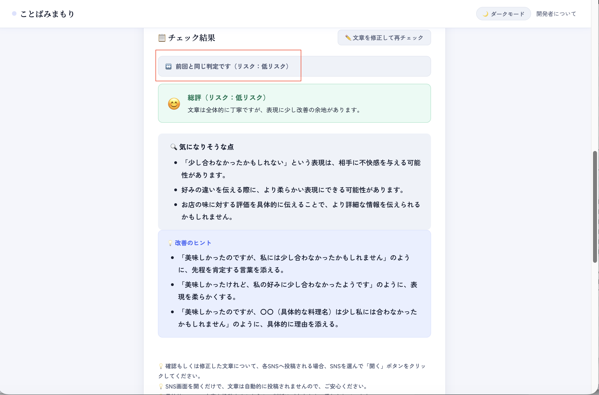
再度、文章の確認結果として、リスク・気になりそうな点・改善のヒント・次にできることが表示されます。
2回目以降のチェックでは、前回との比較結果（リスク変化バナー）も表示されます。
- 表示内容は参考情報であり、正確性や完全性を保証するものではありません。
- 最終的に投稿するかどうかの判断は、ご利用者さまご自身で行ってください。
-
確認結果の右上にある 「✏️ 文章を修正して再チェック」ボタンをクリックすると、
入力欄にフォーカスが移り、文章を修正できます。
このとき、前回の確認結果はそのまま表示されたままになりますので、 結果を見ながら文章を修正していただけます。 - 文章を修正して再度「確認してみる」ボタンをクリックすると、確認結果が更新されます。
- 投稿前セルフチェックは、任意で確認するための補助です。チェックしなくても、SNS選択などの既存機能はそのまま利用できます。
- 投稿前セルフチェックのチェック状態は保存されず、外部にも送信されません。
文章の確認後、各SNSへ投稿したい場合、「SNSを選ぶ」一覧から対象のSNSを選択して、「開く」ボタンもご利用いただけます。
確認もしくは修正した文章について、各SNSへ投稿いただく場合、
「SNSを選ぶ」一覧から対象のSNSを選択して、「開く」ボタンををクリックすると、各SNS画面を表示いただけます。
各SNS画面を表示するだけで、文章は自動的に投稿されませんので、ご安心ください。
最終的にSNSへ文章を投稿するかどうかの判断はご利用者さまに委ねられています。
なお、[LINE を開く] ボタンをクリックすると、LINEアプリをインストールしている環境のみLINEトーク画面が表示されます。それ以外の環境ではLINEアプリダウンロード画面が表示されます。
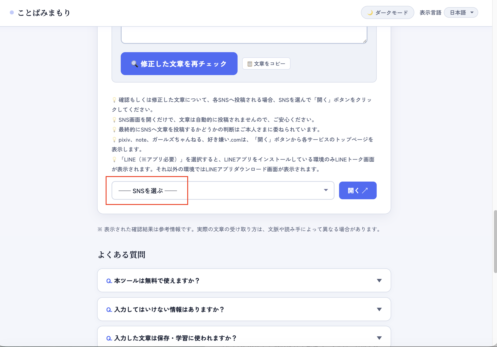
確認した文章について、各SNSへ投稿する場合、「SNSを選ぶ」一覧をクリックします。
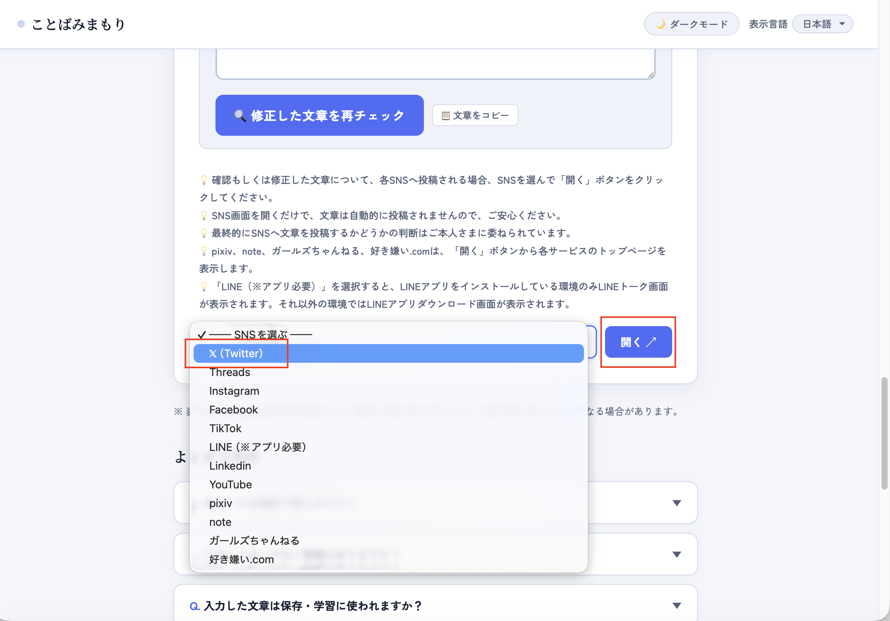
確認した文章について、各SNSへ投稿する場合、「SNSを選ぶ」一覧から投稿したいSNSを選択します。
- SNSを「開く」ボタンをクリックしても、選択したSNS画面を表示するだけです。
- ボタンをクリックしても、文章を自動的に投稿しないようにしております。ご安心ください。
- 最終的にSNSへ文章を投稿するかどうかの判断はご利用者さまに委ねられています。
「SNSを選ぶ」リストから表示できるSNSは、以下になります。
- X（旧Twitter）
- Threads
- TikTok
- LINE
- YouTube
例えば、[X を開く]ボタンをクリックすると、Xの画面が表示されます。
例えば、[X を開く]ボタンをクリックすると、Xの画面が表示されます。
Xの画面が表示されるので、
確認もしくは修正した文章を記載して、Xへ投稿いただくことが可能です。
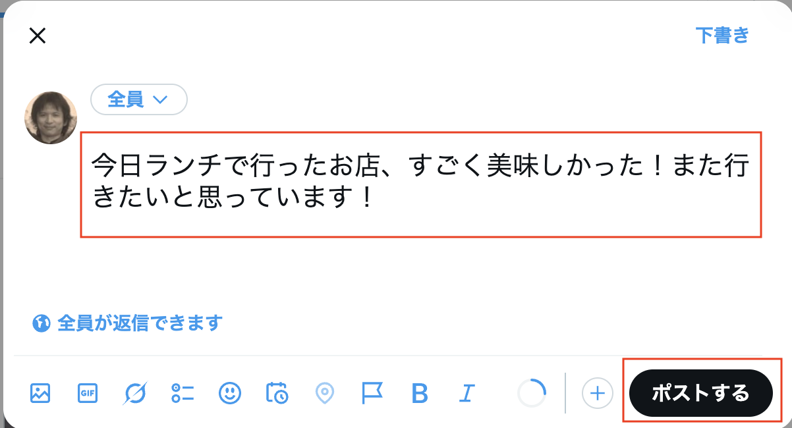
例えば、「SNSを選ぶ」一覧から X を選択して、[を開く]ボタンをクリックすると、Xの画面が表示されます。
- Xを開くボタンをクリックすると、Xの画面が表示されます。
- 投稿したい文章を記載していただいて、投稿することが可能です。